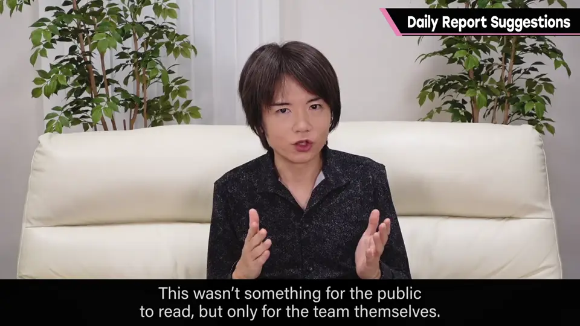
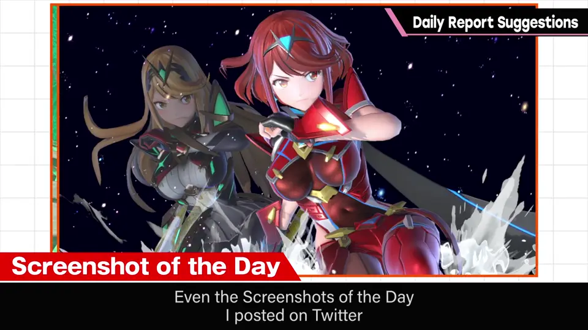
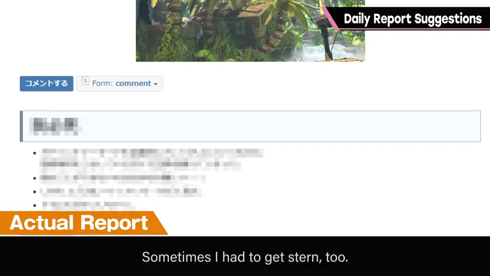
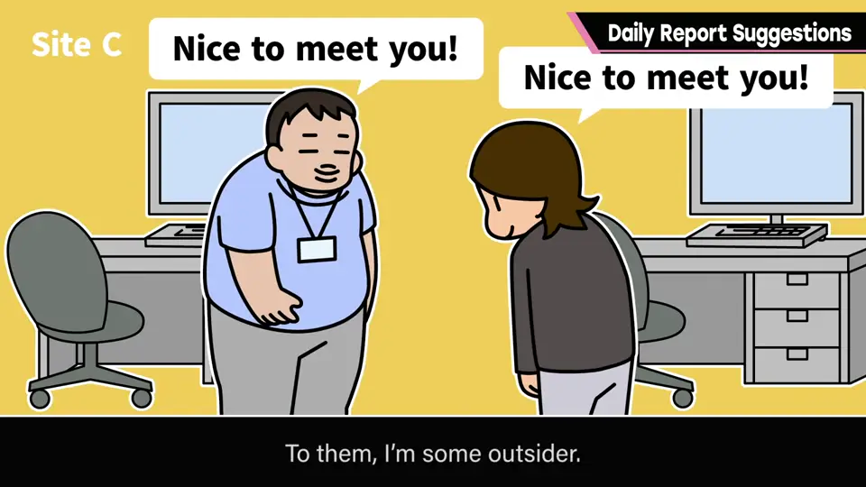
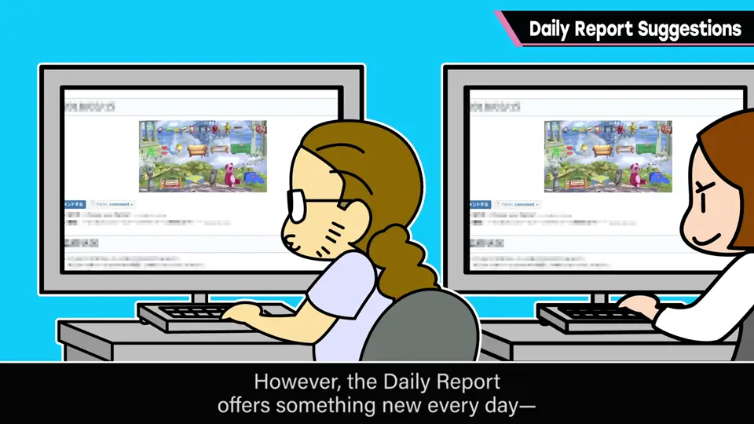
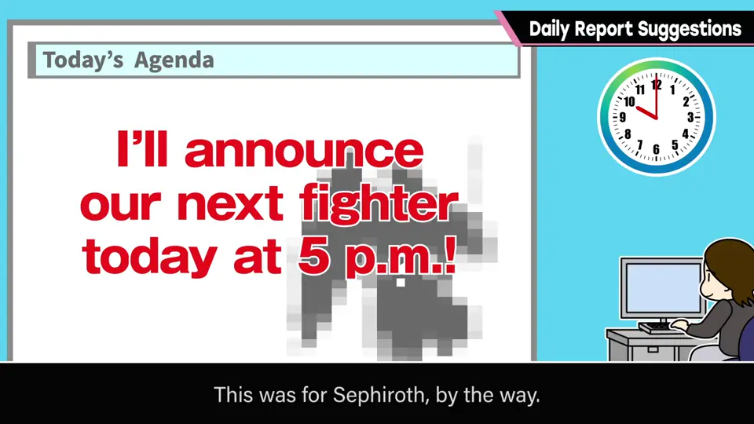
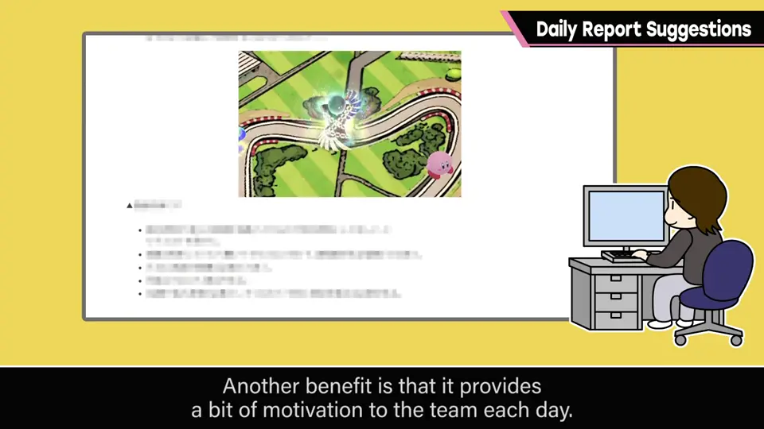
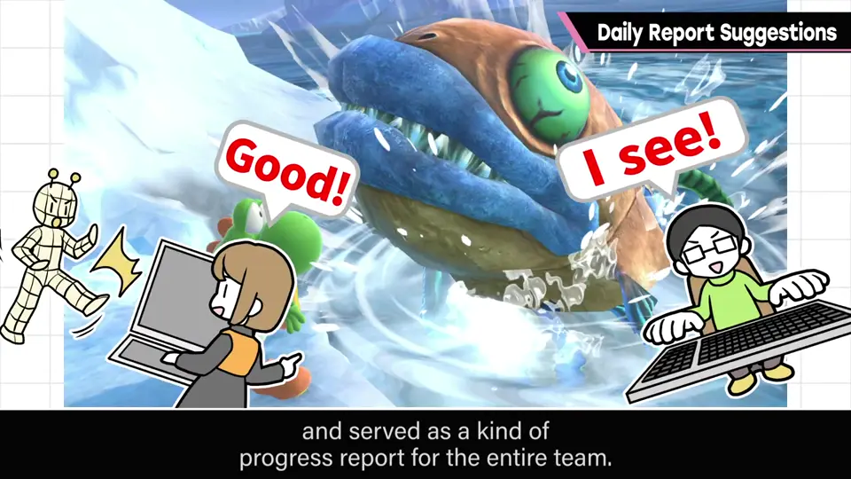

速览
大约从《大乱斗X》起，樱井养成了在团队内每天写日报的习惯：不对外公开、只在团队内阅读，只要是工作日——包括假日出勤——就一定写。Twitter 等处的「今日一张」，原本也是每天贴给团队的截图：先贴这一张，然后每天上传 3～5 个话题，包括项目新闻、监修内容、检查项目、bug 报告，有时也说严厉的话；不一定是给团队的传达事项，也有玩过的游戏感想、发生的事和想法等闲话；每个话题员工都能评论，交流频繁。日报的好处：①让员工认识他：他像是不属于固定团队和公司的人，每次去和某个团队联合，是所谓外来者，来路不明的人从上面下指示，员工心里不好受；读了日报，至少不再是陌生人。②信息共享：重要信息即使用邮件全体通知，意外地没人读；日报页面每天都有变化，很多人自发来看，比邮件传达得更好。有一次在团队内写「下一个制作的斗士 17 点在这里发布」——那是萨菲罗斯——结果访问集中让服务器宕机了，明明只是团队内部。③自己的输出训练：习惯性地写东西能锻炼自己；不，不该说锻炼，而是日常理所当然要做；总监无一例外被要求有很粗的输出。④每天给团队小刺激：他的日报每天都变，对持续做同样工作的团队能带来刺激和发现。⑤确认进度：团队变大后每个人都在做游戏的零件，可能看不到全貌，能确认别处在做什么很重要；「今日一张」最初的目的之一就是让制作物的进度可见、告知全队。其他人也会写作业日报写当天成果，感受到个人性格，有助于营造通风的制作环境，特别推荐。另外团队开始时也设立了「意见箱」，可投稿「想这样做」之类，也很有效。
1. 日报是什么样的 0:02
大约从《大乱斗X》起，樱井养成了在团队内每天写日报的习惯：不对外公开，只在团队内阅读。只要是工作日，包括假日出勤，就一定写。


Twitter 等处展开的「今日一张」，原本也是每天贴给团队的一张截图。日报先贴这一张，然后每天上传 3～5 个话题。
话题包括项目新闻、监修内容、检查项目、bug 报告，有时也会说严厉的话。也不一定是给团队的传达事项，还有玩过的游戏感想、发生的事、所思所想等闲话。

每个话题员工都可以评论，所以员工之间交流也很频繁。
2. 好处①：让大家认识我 1:06
写日报的目的之一，是让员工了解他本人。他像是不属于固定团队、不属于公司的人，每次都去和某个团队联合——所谓外来者。

来路不明的人从上面下指示，员工心里会不好受。但读了日报，至少不再是陌生人。
3. 好处②：信息共享 1:40
重要信息即使用邮件全体通知，也意外地没人读。而日报页面每天都有变化，很多人会自发来看，比邮件传达得更确实。


有一次他在团队内写「下一个制作的斗士将于 17 点在这里发布」——那是萨菲罗斯——结果访问集中，服务器宕机了。明明只是团队内部。
4. 好处③④：输出训练与每日刺激 2:18
习惯性地写东西能锻炼自己——不，不该说锻炼，这是日常理所当然要做的事。特别是总监，无一例外地被要求有很「粗」的输出。

每天给团队一点小刺激也是好处：他的日报每天都在变，对持续做同样工作的团队，能成为刺激和新发现的来源。
5. 好处⑤：确认进度 3:01
团队变大后，每个人都专注于做游戏的零件，可能看不到游戏全貌，所以能确认别处在做什么很重要。

例如「今日一张」让制作物的进度可见，也有向全队告知进度的作用——当初的目的正是这个。当然他也会把单独的图片作为话题贴出来。
其他人也会写作业日报，写当天成果和一点方针。这能感受到那个人的性格，相当重要，有助于营造通风的制作环境，特别推荐。
自测题
1. 樱井的日报一般包含什么？
顶部一张「今日一张」截图，然后 3～5 个话题：新闻、监修内容、检查项、bug 报告、闲话等，可评论。 0:24
2. 为什么日报比全体邮件更能传达信息？
邮件意外地常没人读；日报页面每天变化，很多人自发来看。 1:40
3. 列出日报的几项好处。
让团队认识外来者的他、信息共享、输出训练、每日给团队刺激、确认进度。 1:06